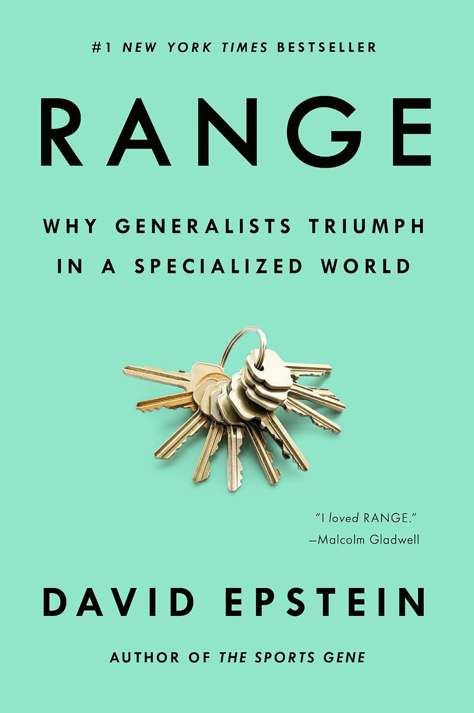

老虎伍兹还不到一岁就握起了高尔夫球杆，两岁上电视推杆，此后的人生几乎只为一件事而存在——他是"越早专精越好"这一信念的活广告。罗杰·费德勒的童年却截然相反：他踢足球、打壁球、玩滑板和羽毛球，青春期才认真转向网球，母亲甚至一度不愿教他打球。大卫·爱泼斯坦（David Epstein）在《成长的边界》开篇并置这两位冠军，是为了动摇一个流行的假设：在任何领域，成功都必须来自尽早的、专一的刻意练习。
爱泼斯坦曾是《体育画报》的资深撰稿人，后在非营利调查机构ProPublica任职，出版过畅销书《运动基因》。在《成长的边界》里，他把体育、音乐、科研、商业中的大量案例和研究编织起来，提出一个反直觉的论点：在多数"复杂"领域，广度和推迟专精，胜过过早的窄化。他借用心理学家罗宾·霍格思（Robin Hogarth）"友善"与"险恶"两种学习环境的区分来立论——象棋、高尔夫属于"友善"环境，规则稳定、反馈即时而准确，练得越多越好；而现实世界大多是"险恶"环境，模式多变、反馈滞后甚至误导，一味重复反而会让人陷入"认知固化"（这一术语由莱斯大学的埃里克·丹恩提出）。
他援引经济学家奥弗·马拉穆德（Ofer Malamud）的一项自然实验：苏格兰学生比英格兰和威尔士学生更晚才选定专业，前者起步时收入落后，却因为"匹配质量"更高而后来居上，且更少中途转行。他也讲任天堂的横井军平——一个并不精通尖端技术的通才，凭"用成熟技术做横向思考"（lateral thinking with withered technology）的理念，用廉价的旧元件造出了Game Boy。书中还有梵高三十多岁才真正拿起画笔、弗朗西斯·赫塞尔本从女童子军志愿者一路做到CEO的"大器晚成"，以及借开普勒的类比推理说明：把其他领域的结构迁移过来的"外行"，常常比钻牛角尖的专家更能破题。爱泼斯坦也由此回应了埃里克森的刻意练习研究，以及格拉德威尔普及的"一万小时定律"——它只在"友善"领域才成立。
《异类》的作者马尔科姆·格拉德威尔（Malcolm Gladwell）写道："出于我说不清的原因，大卫·爱泼斯坦总能让我彻头彻尾地享受那种'被告知自己原以为正确的一切其实都错了'的体验。我爱《成长的边界》。"比尔·盖茨把它列入自己2020年最爱的五本书，并在书评中借用书里的话总结道："在一个越来越激励、甚至要求超级专精的世界里，我们需要更多这样的人：一开始涉猎广泛，在前行中拥抱多元的经历与视角。"
对身处"越早决定越好"焦虑中的读者——替孩子挑特长班的家长，或纠结要不要转行的职场人——这本书提供了一个宽慰而有据的反面证据：走弯路、试错、跨界，往往不是浪费，而是在为将来更好的"匹配"做铺垫。中文版《成长的边界：超专业化时代为什么通才能成功》由范雪竹翻译、后浪 | 北京联合出版公司于2021年出版。